!which pip/projects/dan1/data/Brickman/conda/envs/scvi-1.1.5/bin/pip!which pip/projects/dan1/data/Brickman/conda/envs/scvi-1.1.5/bin/pip%matplotlib inline
%load_ext autoreload
%autoreload 2
import scvi
import anndata
import numpy as np
import scanpy as sc
import seaborn as sns
from scvi.model.utils import mde
import matplotlib.pyplot as plt
import pandas as pd
plt.rcParams['svg.fonttype'] = 'none'
ct_colors = {
'Prelineage': '#7985A5',
'8C_3.0': '#028A46',
'Morula_4.0': '#657cbd',
'Inner Cell Mass': '#F6C445',
'Primitive Endoderm': '#D05B61',
'Epiblast_6.0': '#d6b2ca',
'Epiblast_7.0': '#c38db1',
'Late epiblast': '#aa5c8f',
'Trophectoderm_5.0': '#cddff0',
'Trophectoderm_6.0': '#bdd4eb',
'Trophectoderm_7.0': '#acc9e6',
'Trophectoderm_8.0': '#9cbfe2',
'Trophectoderm_9.0': '#8bb4dd',
'Trophectoderm_10.0': '#5a94ce',
'Unknown': '#F1BD93',
}ENSG_SYMBOL_df = pd.read_table('../results/GRCh38.110.ENSG_to_SYMBOL.csv', delimiter=',').set_index('ensembl')niakan_adata = sc.read_h5ad("../results/niakan_08.withPredictions.adata.h5ad")
niakan_adata.uns['prediction_colors'] = [ct_colors[x] for x in niakan_adata.obs.prediction.cat.categories]
niakan_adataAnnData object with n_obs × n_vars = 89 × 3000
obs: 'sample', 'fastq_1', 'fastq_2', 'treatment', 'batch', 'experiment', 'technology', 'n_genes_by_counts', 'log1p_n_genes_by_counts', 'total_counts', 'log1p_total_counts', 'pct_counts_in_top_50_genes', 'pct_counts_in_top_100_genes', 'pct_counts_in_top_200_genes', 'pct_counts_in_top_500_genes', 'total_counts_mt', 'log1p_total_counts_mt', 'pct_counts_mt', '_scvi_batch', 'ct', '_scvi_labels', 'prediction', 'entropy'
var: 'highly_variable', 'highly_variable_rank', 'means', 'variances', 'variances_norm'
uns: '_scvi_manager_uuid', '_scvi_uuid', 'batch_colors', 'hvg', 'log1p', 'neighbors', 'pca', 'prediction_colors', 'treatment_colors', 'umap'
obsm: 'X_pca', 'X_scANVI', 'X_umap'
layers: 'counts'
obsp: 'connectivities', 'distances'# plt.rcParams['figure.figsize'] = [5, 4]
ax = sc.pl.umap(niakan_adata, color=['prediction', 'treatment', 'entropy'], s=120, wspace=0.35, return_fig = True)
ax.savefig('../figures/niakan_12_UMAP_prediction_treatment_entropy.pdf', bbox_inches = 'tight')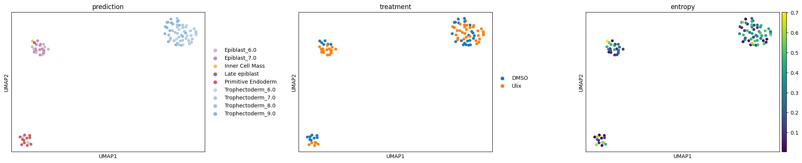
# ax = sc.pl.umap(niakan_adata, color=['entropy'], s=120, return_fig = True)cmtx = sc.metrics.confusion_matrix('treatment', 'prediction', normalize=True, data=niakan_adata.obs)
column_order = ['Inner Cell Mass','Epiblast_6.0','Epiblast_7.0','Late epiblast','Primitive Endoderm','Trophectoderm_6.0','Trophectoderm_7.0','Trophectoderm_8.0','Trophectoderm_9.0']
plt.rcParams['figure.figsize'] = [10, 4]
ax = cmtx[column_order].plot(kind='barh',legend=True, stacked=True, color=ct_colors)
ax.figure.savefig('../figures/niakan_12_Proportions_withLegend.pdf')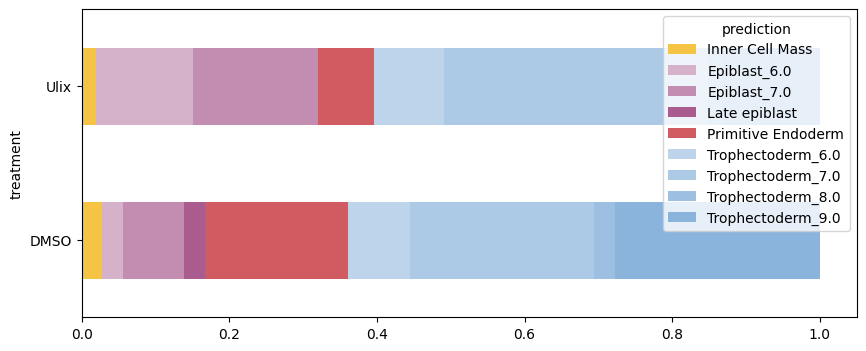
ax = cmtx[column_order].plot(kind='barh',legend=False, stacked=True, color=ct_colors)
ax.figure.savefig('../figures/niakan_12_Proportions_withoutLegend.pdf')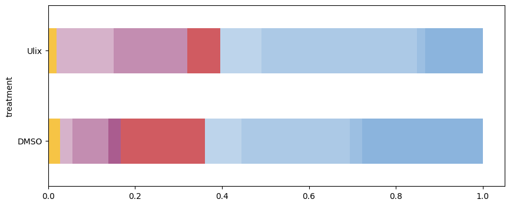
niakan_adata = sc.read_h5ad("../results/11_niakan_adata_combined_notLengthNormalised_withPredictions.h5ad")# remove mitochondrial genes
niakan_adata = niakan_adata[:, niakan_adata.var[~niakan_adata.var.gene_symbol.str.startswith('MT-')].index].copy()
# remove ribosomal genes
niakan_adata = niakan_adata[:, niakan_adata.var[~niakan_adata.var.gene_symbol.str.startswith(('RPS', 'RPL'))].index].copy()sc.pp.normalize_total(niakan_adata,target_sum=10_000)
sc.pp.log1p(niakan_adata)
niakan_adata.raw = niakan_adataniakan_adata.var['gene'] = niakan_adata.var['gene_symbol'].to_list()
niakan_adata.var = niakan_adata.var.set_index('gene')niakan_adata.var_names_make_unique()/home/fdb589/projects/data/Brickman/conda/envs/scvi-1.1.5/lib/python3.10/site-packages/anndata/utils.py:260: UserWarning: Suffix used (-[0-9]+) to deduplicate index values may make index values difficult to interpret. There values with a similar suffixes in the index. Consider using a different delimiter by passing `join={delimiter}`Example key collisions generated by the make_index_unique algorithm: ['SNORD116-1', 'SNORD116-2', 'SNORD116-3', 'SNORD116-4', 'SNORD116-5']
warnings.warn(TE_list = ['GATA2','GATA3','AMOT','TEAD4','YAP1']
PrE_list = ['PDGFRA','OTX2','SOX17','GATA4','GATA6','HNF4A','COL4A1','COL4A2','NANOG','POU5F1']
cRAF_plusTF_responsive_list = ['SPRY4','DUSP6','EGR1','HAS3', 'MYC','DUSP5','ETV5', 'ETV4', 'ETV1', 'JUN', 'LEFTY1', 'NANOG', 'SOX2','POU5F1', 'KLF4', 'GATA4','GATA6','SOX17']sc.pl.clustermap(niakan_adata[niakan_adata.obs.prediction.str.contains('Trophectoderm'),niakan_adata.var.gene_symbol.isin(TE_list)],
obs_keys='treatment',
z_score=1,
cmap="vlag",
center=0,
use_raw = False,
save='12_niakan_human_heatmap_for_TE.pdf'
)/home/fdb589/projects/data/Brickman/conda/envs/scvi-1.1.5/lib/python3.10/site-packages/scanpy/plotting/_utils.py:471: ImplicitModificationWarning: Trying to modify attribute `._uns` of view, initializing view as actual.
adata.uns[value_to_plot + "_colors"] = colors_listWARNING: saving figure to file figures/clustermap12_niakan_human_heatmap_for_TE.pdf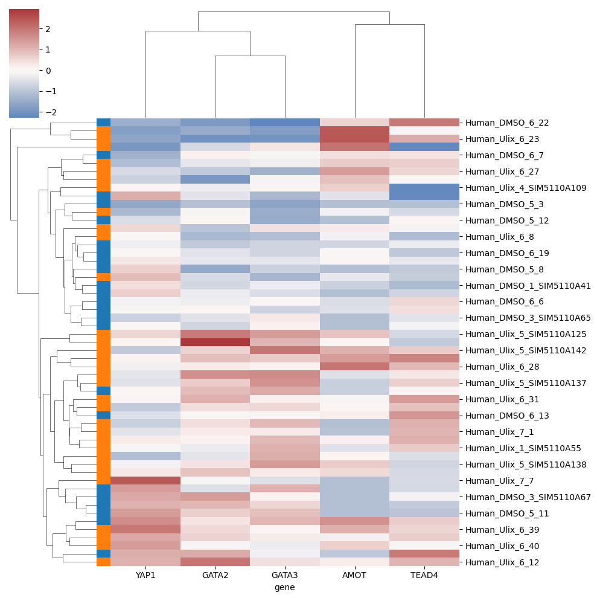
sc.pl.clustermap(niakan_adata[niakan_adata.obs.prediction.str.contains('Primitive Endoderm'),niakan_adata.var.gene_symbol.isin(cRAF_plusTF_responsive_list)],
obs_keys='treatment',
cmap="vlag",
center=0,
use_raw = False,
save='12_niakan_human_heatmap_for_PrE.pdf'
)/home/fdb589/projects/data/Brickman/conda/envs/scvi-1.1.5/lib/python3.10/site-packages/scanpy/plotting/_utils.py:471: ImplicitModificationWarning: Trying to modify attribute `._uns` of view, initializing view as actual.
adata.uns[value_to_plot + "_colors"] = colors_listWARNING: saving figure to file figures/clustermap12_niakan_human_heatmap_for_PrE.pdf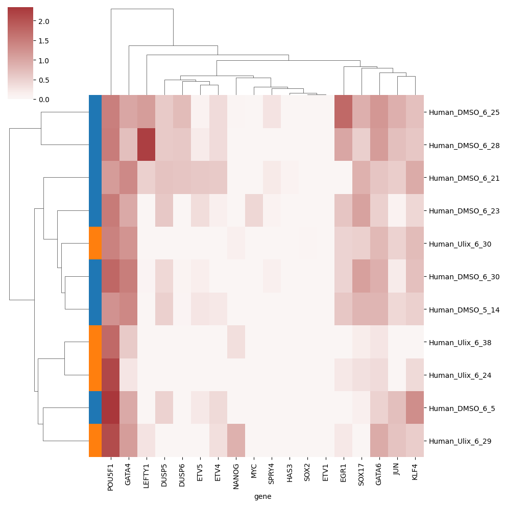
sc.pl.clustermap(niakan_adata[niakan_adata.obs.prediction.str.contains('Epiblast'),niakan_adata.var.gene_symbol.isin(cRAF_plusTF_responsive_list)],
obs_keys='treatment',
cmap="vlag",
center=0,
use_raw = False,
save='12_niakan_human_heatmap_for_EPI.pdf'
)/home/fdb589/projects/data/Brickman/conda/envs/scvi-1.1.5/lib/python3.10/site-packages/scanpy/plotting/_utils.py:471: ImplicitModificationWarning: Trying to modify attribute `._uns` of view, initializing view as actual.
adata.uns[value_to_plot + "_colors"] = colors_listWARNING: saving figure to file figures/clustermap12_niakan_human_heatmap_for_EPI.pdf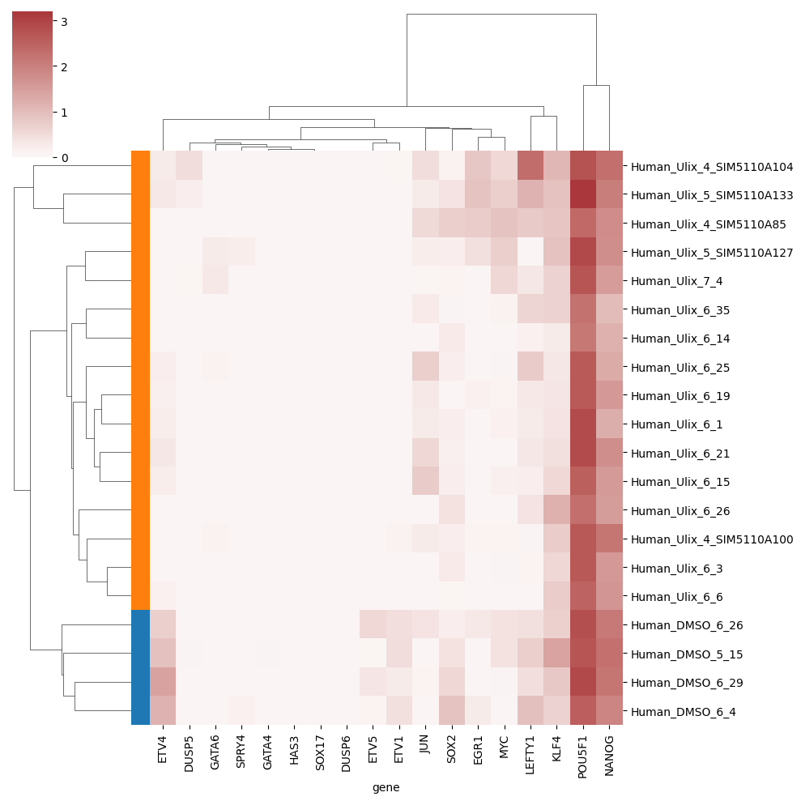
niakan_adata = sc.read_h5ad("../results/niakan_08.withPredictions.adata.h5ad")
lvae = scvi.model.SCANVI.load('../../proks-salehin-et-al-v2/results/100_human_integration/scanvi_ns_15/')Trainer will use only 1 of 4 GPUs because it is running inside an interactive / notebook environment. You may try to set `Trainer(devices=4)` but please note that multi-GPU inside interactive / notebook environments is considered experimental and unstable. Your mileage may vary.
/home/fdb589/projects/data/Brickman/conda/envs/scvi-1.1.5/lib/python3.10/site-packages/lightning/fabric/plugins/environments/slurm.py:191: The `srun` command is available on your system but is not used. HINT: If your intention is to run Lightning on SLURM, prepend your python command with `srun` like so: srun python /home/fdb589/projects/data/Brickman/conda/envs/scvi- ...
/home/fdb589/projects/data/Brickman/conda/envs/scvi-1.1.5/lib/python3.10/site-packages/scvi/model/base/_utils.py:66: FutureWarning: You are using `torch.load` with `weights_only=False` (the current default value), which uses the default pickle module implicitly. It is possible to construct malicious pickle data which will execute arbitrary code during unpickling (See https://github.com/pytorch/pytorch/blob/main/SECURITY.md#untrusted-models for more details). In a future release, the default value for `weights_only` will be flipped to `True`. This limits the functions that could be executed during unpickling. Arbitrary objects will no longer be allowed to be loaded via this mode unless they are explicitly allowlisted by the user via `torch.serialization.add_safe_globals`. We recommend you start setting `weights_only=True` for any use case where you don't have full control of the loaded file. Please open an issue on GitHub for any issues related to this experimental feature.
model = torch.load(model_path, map_location=map_location)INFO File ../../proks-salehin-et-al-v2/results/100_human_integration/scanvi_ns_15/model.pt already downloaded # scvi.model.SCANVI.prepare_query_anndata(niakan_adata, lvae)
# lvae_q = scvi.model.SCANVI.load_query_data(niakan_adata, lvae)
# lvae.adata.obs['prediction'] = lvae.predict()
# lvae_q.train(max_epochs=20, plan_kwargs=dict(weight_decay=0.0), check_val_every_n_epoch=10, early_stopping=True)
# lvae.adata.obsm["X_scANVI"] = lvae.get_latent_representation()
# niakan_adata.obsm["X_scANVI"] = lvae_q.get_latent_representation()
# niakan_adata.obs['prediction'] = lvae_q.predict()
# niakan_adata.obs['entropy'] = 1 - lvae_q.predict(soft=True).max(axis=1)
# niakan_adata.obsm['X_cell_prbs'] = lvae_q.predict(soft=True)
# lvae_q.save('../results/12_niakan_human_query', save_anndata=True)lvae_q = scvi.model.SCANVI.load('../results/12_niakan_human_query')
lvae.adata.obs['prediction'] = lvae.predict()
lvae.adata.obsm["X_scANVI"] = lvae.get_latent_representation()
niakan_adata.obsm["X_scANVI"] = lvae_q.get_latent_representation()
niakan_adata.obs['prediction'] = lvae_q.predict()
niakan_adata.obs['entropy'] = 1 - lvae_q.predict(soft=True).max(axis=1)
niakan_adata.obsm['X_cell_prbs'] = lvae_q.predict(soft=True)Trainer will use only 1 of 4 GPUs because it is running inside an interactive / notebook environment. You may try to set `Trainer(devices=4)` but please note that multi-GPU inside interactive / notebook environments is considered experimental and unstable. Your mileage may vary.
/home/fdb589/projects/data/Brickman/conda/envs/scvi-1.1.5/lib/python3.10/site-packages/lightning/fabric/plugins/environments/slurm.py:191: The `srun` command is available on your system but is not used. HINT: If your intention is to run Lightning on SLURM, prepend your python command with `srun` like so: srun python /home/fdb589/projects/data/Brickman/conda/envs/scvi- ...
/home/fdb589/projects/data/Brickman/conda/envs/scvi-1.1.5/lib/python3.10/site-packages/scvi/model/base/_utils.py:66: FutureWarning: You are using `torch.load` with `weights_only=False` (the current default value), which uses the default pickle module implicitly. It is possible to construct malicious pickle data which will execute arbitrary code during unpickling (See https://github.com/pytorch/pytorch/blob/main/SECURITY.md#untrusted-models for more details). In a future release, the default value for `weights_only` will be flipped to `True`. This limits the functions that could be executed during unpickling. Arbitrary objects will no longer be allowed to be loaded via this mode unless they are explicitly allowlisted by the user via `torch.serialization.add_safe_globals`. We recommend you start setting `weights_only=True` for any use case where you don't have full control of the loaded file. Please open an issue on GitHub for any issues related to this experimental feature.
model = torch.load(model_path, map_location=map_location)INFO File ../results/12_niakan_human_query/model.pt already downloaded merged_adata = anndata.concat([lvae.adata.copy(), niakan_adata])
merged_adata.obs['this_study'] = merged_adata.obs['experiment'] == 'Simon et al, 2024'
merged_adata.obs.prediction = merged_adata.obs.prediction.astype('category')
merged_adata.obs.prediction = merged_adata.obs.prediction.cat.reorder_categories(['Prelineage', '8C_3.0', 'Morula_4.0', 'Inner Cell Mass', 'Epiblast_6.0', 'Epiblast_7.0', 'Late epiblast', 'Primitive Endoderm', 'Trophectoderm_5.0', 'Trophectoderm_6.0', 'Trophectoderm_7.0', 'Trophectoderm_8.0', 'Trophectoderm_9.0', 'Trophectoderm_10.0'], ordered=True)
merged_adata.uns['prediction_colors'] = [ct_colors[ct] for ct in merged_adata.obs.prediction.cat.categories]
merged_adata.obs['treatment'] = None
merged_adata.obs.loc[merged_adata.obs_names.str.contains('Ulix'), 'treatment'] = 'Ulix'
merged_adata.obs.loc[merged_adata.obs_names.str.contains('DMSO'), 'treatment'] = 'DMSO'sc.pp.neighbors(merged_adata, use_rep="X_scANVI", n_neighbors = 15, metric='euclidean')
sc.tl.umap(merged_adata, min_dist=0.5)
sc.tl.draw_graph(merged_adata)ax = sc.pl.umap(merged_adata, color=['batch', 'prediction', 'this_study', 'treatment'], ncols=2, wspace=0.4, return_fig=True)
ax.savefig('../figures/12_niakan_human_integration_umap.pdf')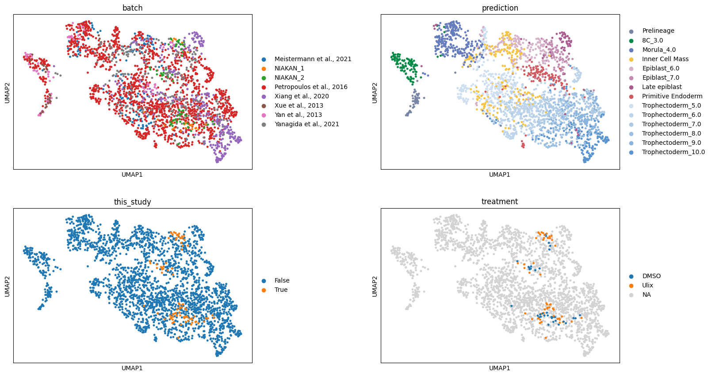
ax = sc.pl.draw_graph(merged_adata,color=['batch', 'prediction', 'this_study', 'treatment'], ncols=2, wspace=0.4, return_fig=True)
ax.savefig('../figures/12_niakan_human_integration_FA.pdf')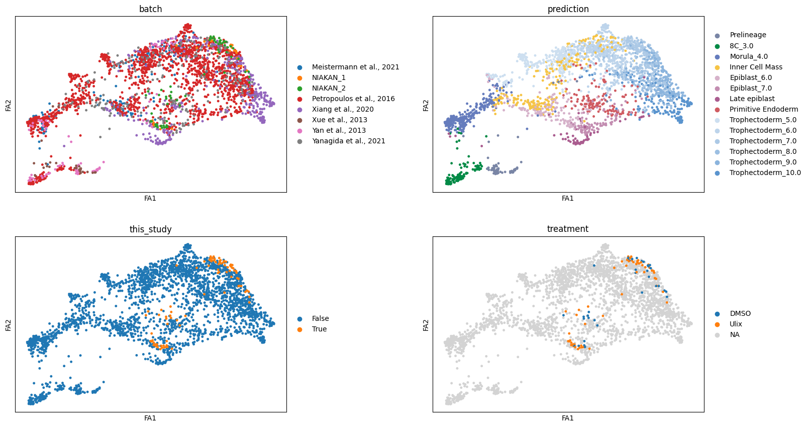
import scFates as scf
import pandas as pd
from sklearn.preprocessing import MinMaxScalerlvae = scvi.model.SCANVI.load('../../proks-salehin-et-al-v2/results/100_human_integration/scanvi_ns_15/')
lvae.adata.obs['dataset'] = 'Reference'
lvae.adata.obs['prediction'] = lvae.predict()
lvae.adata.obsm["X_scANVI"] = lvae.get_latent_representation()
lvae_q = scvi.model.SCANVI.load('../results/12_niakan_human_query')
lvae.adata.obs['dataset'] = 'Simon et al, 2024'
lvae_q.adata.obsm["X_scANVI"] = lvae_q.get_latent_representation()INFO File ../../proks-salehin-et-al-v2/results/100_human_integration/scanvi_ns_15/model.pt already downloaded
INFO File ../results/12_niakan_human_query/model.pt already downloaded /projects/dan1/data/Brickman/conda/envs/scvi-1.1.5/lib/python3.10/site-packages/scvi/model/base/_utils.py:66: FutureWarning: You are using `torch.load` with `weights_only=False` (the current default value), which uses the default pickle module implicitly. It is possible to construct malicious pickle data which will execute arbitrary code during unpickling (See https://github.com/pytorch/pytorch/blob/main/SECURITY.md#untrusted-models for more details). In a future release, the default value for `weights_only` will be flipped to `True`. This limits the functions that could be executed during unpickling. Arbitrary objects will no longer be allowed to be loaded via this mode unless they are explicitly allowlisted by the user via `torch.serialization.add_safe_globals`. We recommend you start setting `weights_only=True` for any use case where you don't have full control of the loaded file. Please open an issue on GitHub for any issues related to this experimental feature.
model = torch.load(model_path, map_location=map_location)
/projects/dan1/data/Brickman/conda/envs/scvi-1.1.5/lib/python3.10/site-packages/scvi/model/base/_utils.py:66: FutureWarning: You are using `torch.load` with `weights_only=False` (the current default value), which uses the default pickle module implicitly. It is possible to construct malicious pickle data which will execute arbitrary code during unpickling (See https://github.com/pytorch/pytorch/blob/main/SECURITY.md#untrusted-models for more details). In a future release, the default value for `weights_only` will be flipped to `True`. This limits the functions that could be executed during unpickling. Arbitrary objects will no longer be allowed to be loaded via this mode unless they are explicitly allowlisted by the user via `torch.serialization.add_safe_globals`. We recommend you start setting `weights_only=True` for any use case where you don't have full control of the loaded file. Please open an issue on GitHub for any issues related to this experimental feature.
model = torch.load(model_path, map_location=map_location)merged_adata = anndata.concat([lvae.adata.copy(), lvae_q.adata.copy()])
merged_adata.obs['this_study'] = merged_adata.obs['experiment'] == 'Simon et al, 2024'
merged_adata.obs.prediction = merged_adata.obs.prediction.astype('category')
merged_adata.obs.prediction = merged_adata.obs.prediction.cat.reorder_categories(['Prelineage', '8C_3.0', 'Morula_4.0', 'Inner Cell Mass', 'Epiblast_6.0', 'Epiblast_7.0', 'Late epiblast', 'Primitive Endoderm', 'Trophectoderm_5.0', 'Trophectoderm_6.0', 'Trophectoderm_7.0', 'Trophectoderm_8.0', 'Trophectoderm_9.0', 'Trophectoderm_10.0'], ordered=True)
merged_adata.uns['prediction_colors'] = [ct_colors[ct] for ct in merged_adata.obs.prediction.cat.categories]
merged_adata.obs['treatment'] = 'None'
merged_adata.obs.loc[merged_adata.obs_names.str.contains('Ulix'), 'treatment'] = 'Ulix'
merged_adata.obs.loc[merged_adata.obs_names.str.contains('DMSO'), 'treatment'] = 'DMSO'merged_adata = merged_adata[merged_adata.obs.prediction.isin(['Morula_4.0', 'Inner Cell Mass','Epiblast_6.0','Epiblast_7.0','Late epiblast','Primitive Endoderm'])].copy()sc.pp.neighbors(merged_adata, use_rep="X_scANVI")
sc.tl.umap(merged_adata)
sc.tl.diffmap(merged_adata)
sc.tl.paga(merged_adata, groups='prediction')
sc.pl.paga(merged_adata, color='prediction', frameon=False, fontoutline=True)
sc.tl.draw_graph(merged_adata, init_pos='paga')2024-12-12 11:57:22.994547: W tensorflow/compiler/tf2tensorrt/utils/py_utils.cc:38] TF-TRT Warning: Could not find TensorRT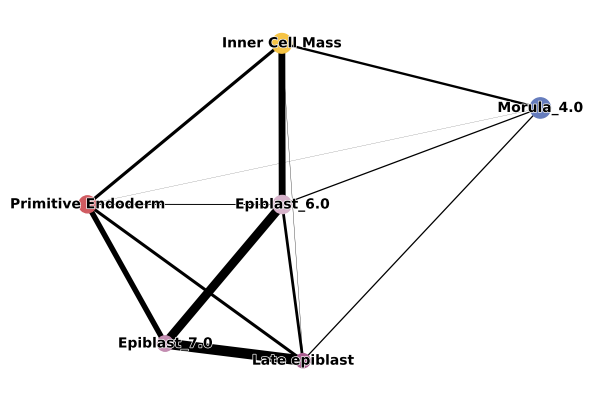
sc.pl.draw_graph(merged_adata, color=['prediction'], frameon=False, ncols=2)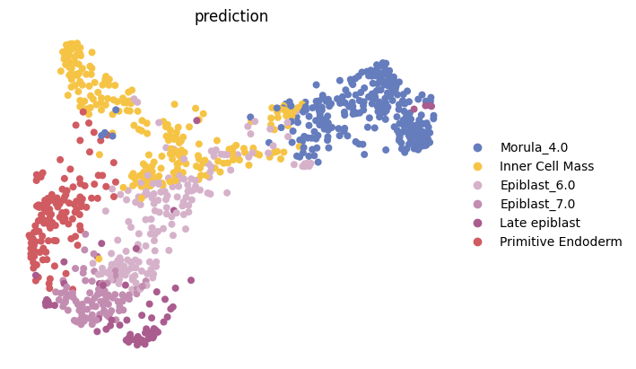
merged_adata.uns['iroot'] = np.flatnonzero(merged_adata.obs['prediction'] == 'Morula_4.0')[0]
sc.tl.dpt(merged_adata)sc.pl.draw_graph(merged_adata, color=['dpt_pseudotime', 'prediction'], frameon=False, ncols=2)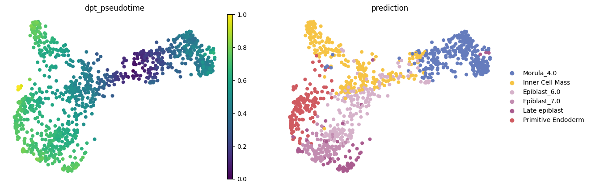
sc.pp.neighbors(merged_adata, use_rep="X_scANVI")
sc.tl.draw_graph(merged_adata)sc.pl.draw_graph(merged_adata, color=['prediction'])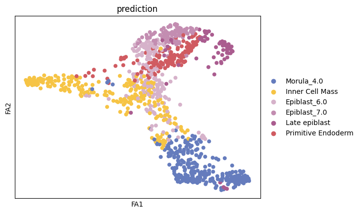
sig = scf.tl.explore_sigma(merged_adata,
Nodes=20,
use_rep="X_draw_graph_fa",
sigmas=[1000,500,400,300,200,100,50,10,1],
seed=42,plot=True)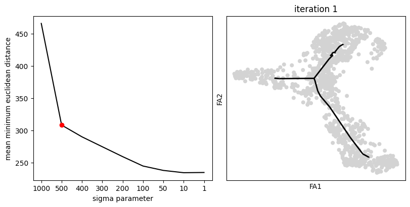
scf.tl.tree(merged_adata,
Nodes=20,
use_rep="X_draw_graph_fa",
method="ppt",
ppt_nsteps=10,
ppt_sigma=sig,
ppt_lambda=100,
seed=42)inferring a principal tree --> parameters used
20 principal points, sigma = 500, lambda = 100, metric = euclidean
fitting: 0%| | 0/10 [00:00<?, ?it/s] fitting: 100%|██████████| 10/10 [00:00<00:00, 22.83it/s]
not converged (error: 0.06862519665918461)
finished (0:00:00) --> added
.uns['ppt'], dictionnary containing inferred tree.
.obsm['X_R'] soft assignment of cells to principal points.
.uns['graph']['B'] adjacency matrix of the principal points.
.uns['graph']['F'] coordinates of principal points in representation space.scf.pl.graph(merged_adata)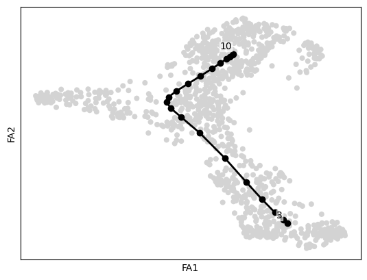
scf.tl.root(merged_adata, 3)node 3 selected as a root --> added
.uns['graph']['root'] selected root.
.uns['graph']['pp_info'] for each PP, its distance vs root and segment assignment.
.uns['graph']['pp_seg'] segments network information.scf.tl.pseudotime(merged_adata,n_jobs=10,n_map=10,seed=42)projecting cells onto the principal graph
mappings: 0%| | 0/10 [00:00<?, ?it/s] mappings: 100%|██████████| 10/10 [00:29<00:00, 2.93s/it]
finished (0:00:29) --> added
.obs['edge'] assigned edge.
.obs['t'] pseudotime value.
.obs['seg'] segment of the tree assigned.
.obs['milestones'] milestone assigned.
.uns['pseudotime_list'] list of cell projection from all mappings./projects/dan1/data/Brickman/conda/envs/scvi-1.1.5/lib/python3.10/site-packages/joblib/externals/loky/backend/fork_exec.py:38: RuntimeWarning: os.fork() was called. os.fork() is incompatible with multithreaded code, and JAX is multithreaded, so this will likely lead to a deadlock.
pid = os.fork()scf.pl.trajectory(merged_adata)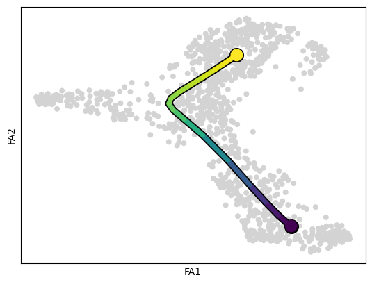
merged_adata.obs['t_scaled'] = MinMaxScaler().fit_transform(merged_adata.obs['t'].values.reshape(-1, 1)).flatten()merged_adata.uns['treatment_colors'] = ['tab:blue', 'lightgrey', 'tab:orange']ax = sc.pl.draw_graph(merged_adata, color=['prediction', 'treatment', 'dpt_pseudotime', 't_scaled'], frameon=False, ncols=2, cmap='viridis', wspace=0.3, return_fig=True)
ax.savefig('../figures/12_niakan_human_pseudotime.pdf')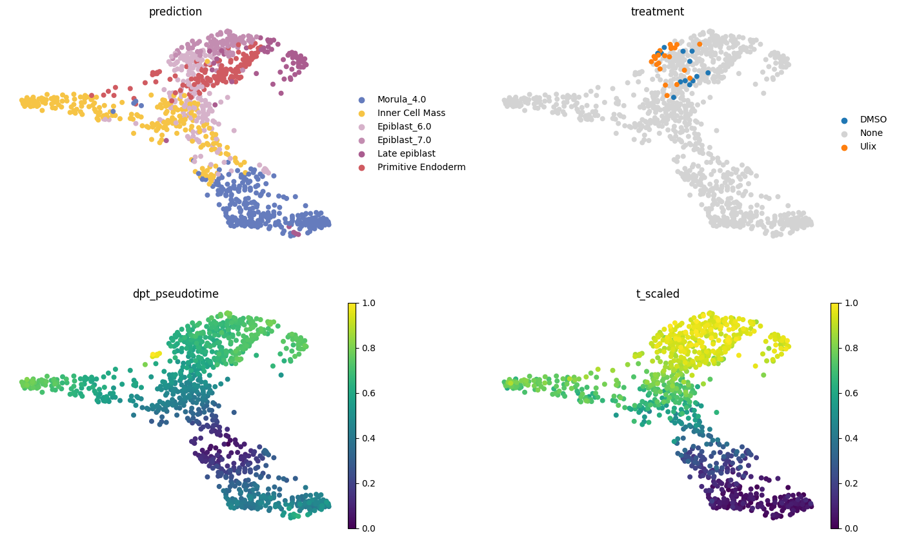
# df = pd.DataFrame({
# 'pseudotime': merged_adata.obs.t_scaled.to_numpy(),
# 'treatment': merged_adata.obs.treatment.to_numpy(),
# 'treatment_codes': merged_adata.obs.treatment.cat.codes.to_numpy()
# }).sort_values(by='pseudotime')
# fig, ax = plt.subplots(2,1,figsize=(10,2.5))
# sns.heatmap(df[['pseudotime']].T, cmap='viridis', cbar=True, xticklabels=False, ax=ax[0])
# sns.heatmap(df[['treatment_codes']].T, cmap=merged_adata.uns['treatment_colors'], cbar=True, xticklabels=False, ax=ax[1])
# fig.savefig('../figures/12_niakan_human_pseudotime_treatment.pdf')adata = merged_adata[merged_adata.obs.prediction.isin(['Inner Cell Mass','Epiblast_6.0','Epiblast_7.0','Late epiblast'])]
adata = adata[adata.obs.sort_values(by='t_scaled').index].copy()
# df = adata.to_df()
df = adata.raw.to_adata().to_df()
# df.columns = lvae.adata.var.symbol.values
df.columns = ENSG_SYMBOL_df.loc[df.columns.values,'symbol'].values
df = (df - df.min()) / (df.max() - df.min())
df = df\
.assign(predictions=adata.obs.prediction.cat.codes.to_numpy())\
.assign(pseudotime=adata.obs.t_scaled.to_numpy())\
.assign(treatment=adata.obs.treatment)\
.assign(treatment_codes=adata.obs.treatment.cat.codes.to_numpy())\
.assign(DMSO=adata.obs.treatment == 'DMSO')\
.assign(Ulixertinib=adata.obs.treatment == 'Ulix')
df['ps_bins'] = pd.cut(df.pseudotime, bins=np.arange(0, 1.1, 0.1))fig, ax = plt.subplots(9,1,figsize=(9,2.5))
for idx, gene in enumerate(['SOX2', 'NANOG', 'FGF4', 'KLF17']):
sns.heatmap(df[[gene]].T, cmap='Reds', cbar=False, xticklabels=False, ax=ax[idx])
sns.heatmap(df[['DMSO']].T, cbar=False, cmap=['lightgrey', 'tab:blue'], xticklabels=False, ax=ax[4])
sns.heatmap(df[['Ulixertinib']].T, cmap=['lightgrey', 'tab:orange'], cbar=False, xticklabels=False, ax=ax[5])
sns.heatmap(df[['treatment_codes']].T, cbar=False, cmap=list(adata.uns['treatment_colors']), xticklabels=False, ax=ax[6])
sns.heatmap(df[['predictions']].T, cbar=False, cmap=adata.obs.prediction.map(ct_colors).cat.categories.tolist(), xticklabels=False, ax=ax[7])
sns.heatmap(df[['pseudotime']].T, cmap='viridis', cbar=False, xticklabels=False, ax=ax[8])
for ax_ in ax:
ax_.tick_params(axis='y', rotation=0)
fig.suptitle('Trajectory from ICM to EPI')
fig.savefig('../figures/12_niakan_human_pseudotime_ICM_EPI.pdf', bbox_inches='tight')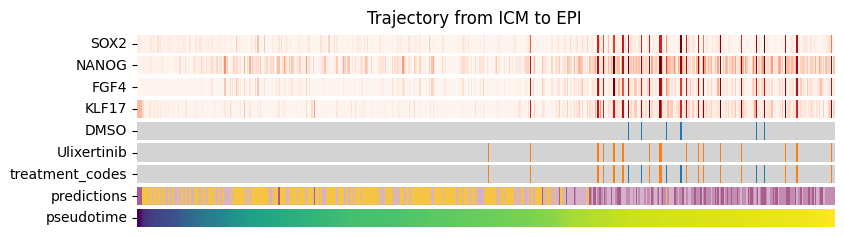
ax = (pd.crosstab(df.ps_bins, df.treatment, normalize='index') * 100).plot.bar(color=['tab:blue', 'lightgrey', 'tab:orange'], title='Treated cells over pseudotime', xlabel='Binned pseudotime', ylabel='% of cells')
ax.figure.savefig('../figures/12_niakan_human_pseudotime_ICM_EPI_treatment.pdf', bbox_inches='tight')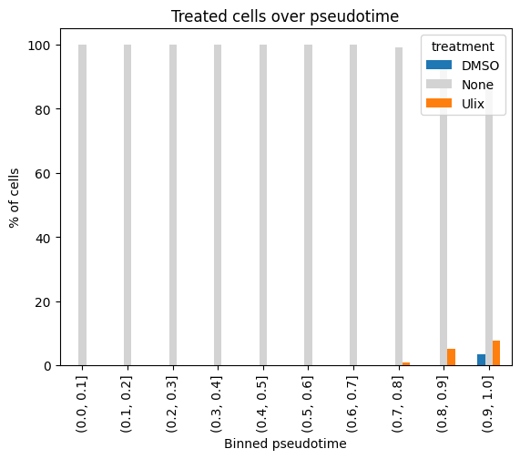